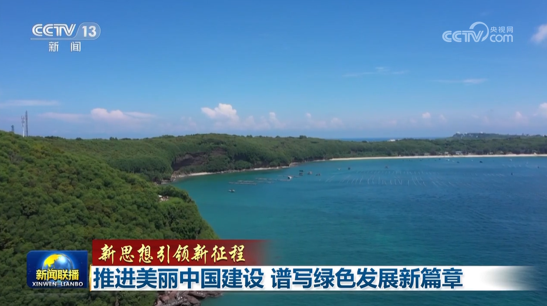
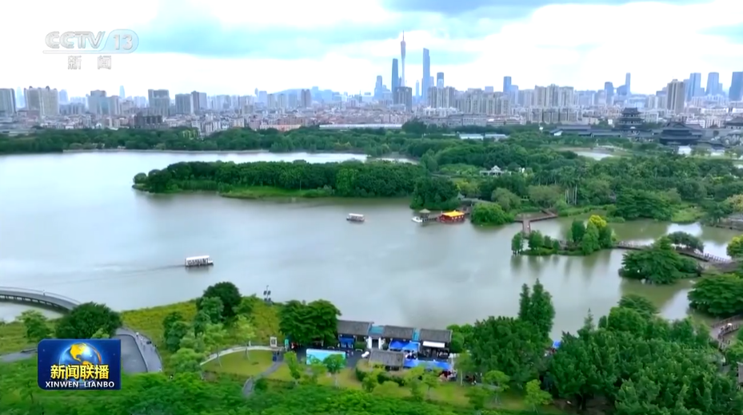
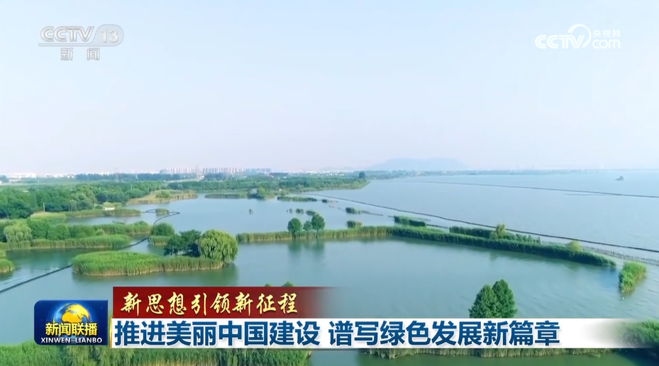

【新思想引领新征程】推进美丽中国建设 谱写绿色发展新篇章
2023年07月23日 19:49 央视网
央视网消息（新闻联播）：生态文明建设是关系中华民族永续发展的根本大计。习近平总书记指出，要把建设美丽中国摆在强国建设、民族复兴的突出位置，以高品质生态环境支撑高质量发展，加快推进人与自然和谐共生的现代化。各地坚持以习近平生态文明思想为指引，牢固树立和践行绿水青山就是金山银山的理念，以更高站位、更宽视野、更大力度，全面推进美丽中国建设。
盛夏时节，神州大地山清水秀，万里河山多姿多彩。
党的十八大以来，在以习近平同志为核心的党中央坚强领导下，一系列根本性、开创性、长远性工作全面开展，推进生态文明建设决心之大、力度之大、成效之大前所未有。从滚滚长江到浩浩黄河，从青藏高原到草场林海，习近平总书记对生态文明建设念兹在兹，倾注了巨大心血。
在习近平生态文明思想科学指引下，各地坚定走生态优先、绿色发展之路。党的十八大以来，我国水环境质量发生转折性变化，2022年全国地表水水质优良断面比例提升至87.9%；绿色版图不断扩大，10年来全国完成造林约10.2亿亩；天空更蓝，2022年全国地级及以上城市空气质量优良天数比例达86.5%，重污染天数比例首次降到1%以内。新时代生态文明建设的成就举世瞩目，成为新时代党和国家事业取得历史性成就、发生历史性变革的显著标志。
牢记习近平总书记嘱托，各地坚持山水林田湖草沙一体化保护和系统治理，努力寻找生态保护修复的最佳方案。在陕西，秦岭北麓主体山水林田湖草沙一体化保护和修复全面展开，聚焦秦岭北麓主体的生物多样性、水源涵养、水土保持3大功能，计划保护修复面积超35000公顷。在江苏无锡太湖沿岸，通过种植本土植物，打造湿地生物链，一座座小型湿地正成为太湖的生态屏障。在湖北丹江口水库库区，林管人员正在石漠化的山体上为新一轮植树造林做准备，今年丹江口库区预计造林66000亩。在黑龙江伊春，新技术将红松育苗上山造林的时间从4年缩短到2年，今年当地计划育苗350万株。
积极拓宽“绿水青山”转化“金山银山”的路径。湖南对沿长江一公里范围内的所有化工企业全部清退、搬离。眼下，当地正积极布局新兴产业，一批新材料、绿色化工等现代绿色产业集群加速形成。
责任编辑：王树淼 SN242
关键字：美丽中国 绿色发展 新篇章 新征程